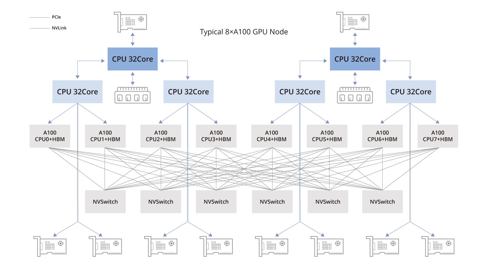

Introduzione
L'architettura della GPU definisce come i suoi componenti lavorano insieme per eseguire operazioni complesse. Le GPU moderne hanno un'architettura parallela che include:
- Streaming Multiprocessors (SM): Gruppi di core che eseguono operazioni parallele per ottenere alte prestazioni.
- Pipeline Grafica: Un processo che trasforma i dati 3D in immagini 2D visibili sullo schermo.
- Unified Memory: Una memoria condivisa tra CPU e GPU per una gestione più efficiente dei dati.
- Ray Tracing Cores: Unità specializzate per simulare in modo realistico il comportamento della luce nei giochi e nei film.

Conclusioni
Le moderne architetture delle GPU sono progettate per gestire non solo il rendering grafico, ma anche calcoli avanzati come il machine learning e il ray tracing, offrendo prestazioni straordinarie.